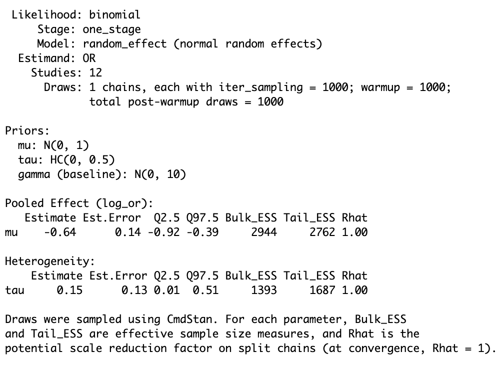
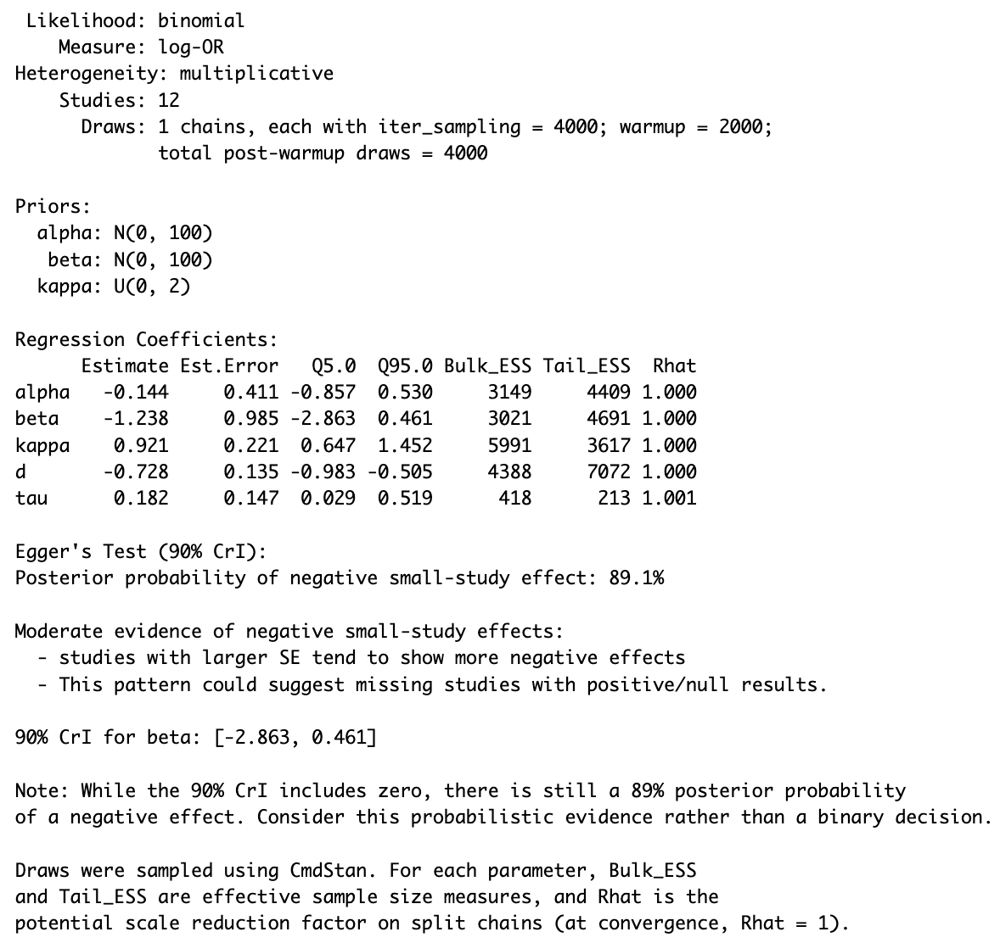
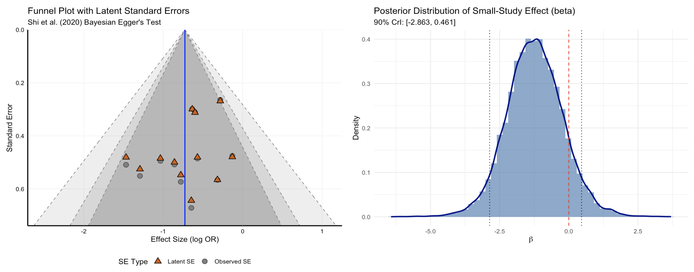
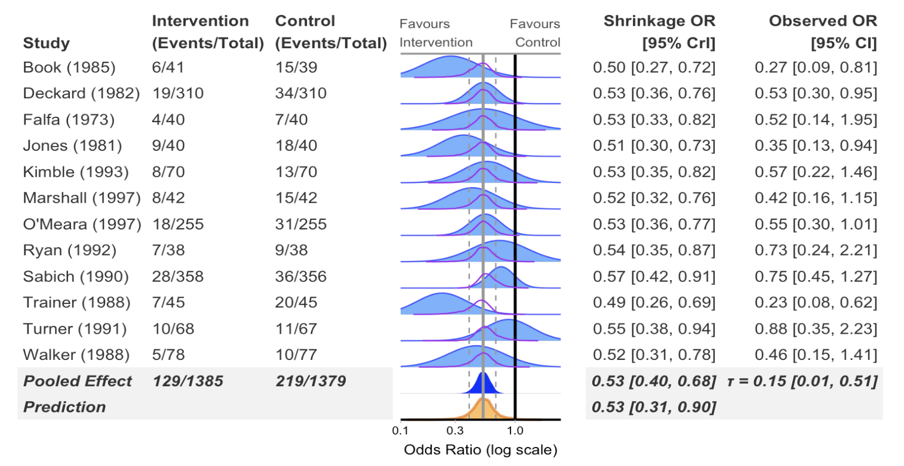
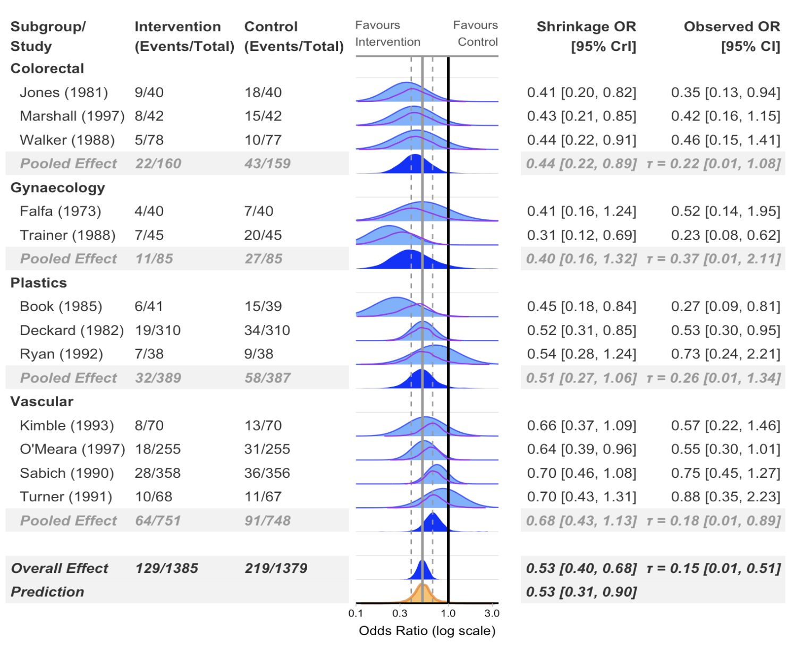
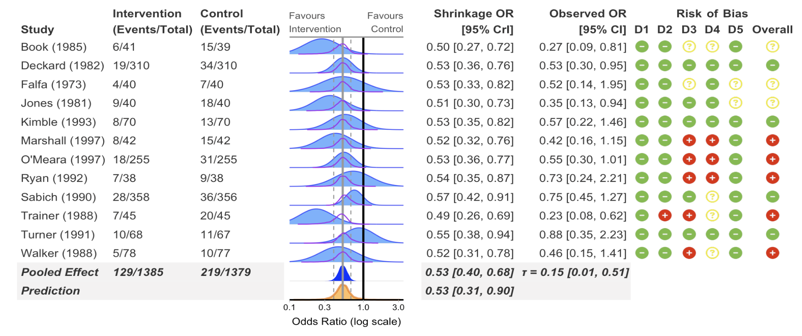
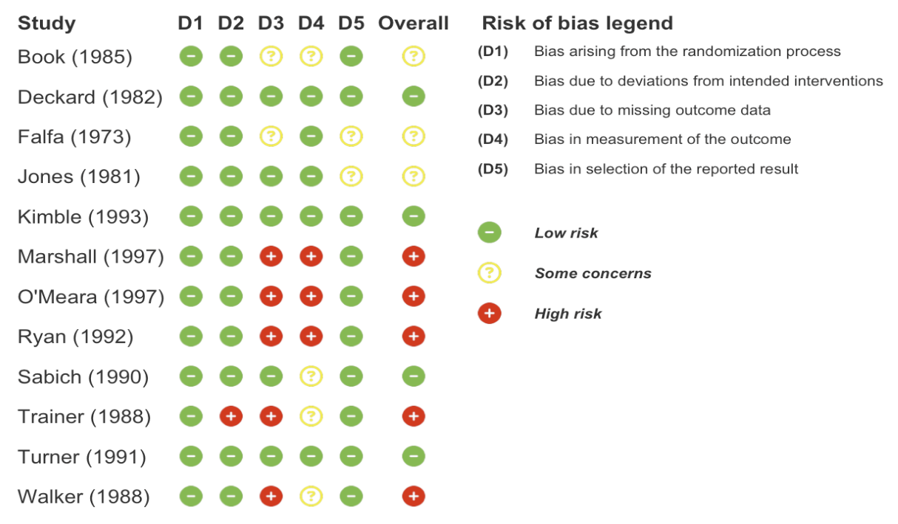
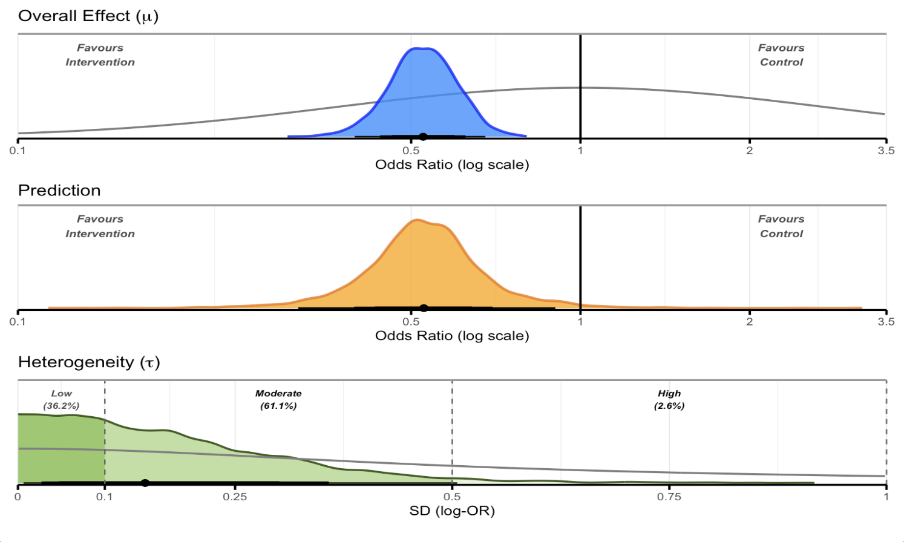

bayesma is an R package for conducting Bayesian meta-analyses using Stan. It provides a complete, opinionated workflow from data preparation through model fitting, publication bias correction, heterogeneity assessment, and reporting — with sensible defaults and full prior control at every stage.
Getting Started
If you are new to Bayesian Meta Analysis, it is recommended to read the workflow vignette and other vignettes in addition to these other resources:
- Bayesian Meta-Analysis: A Practical Introduction
- bayesmeta package vignettes
- Matti Vuorre’s Blog: Meta-analysis is a special case of Bayesian multilevel modeling
- Solomon Kurz’s blog- Bayesian meta-analysis in brms: Part I and Part II
- Doing Meta Analysis in R- Chapter 13: Bayesian Meta-Analysis
Installation
Install the development version from GitHub:
# install.packages("remotes")
remotes::install_github("BLMoran/bayesma")bayesma uses cmdstanr as its Stan backend. If you do not already have it:
install.packages("cmdstanr", repos = c("https://stan-dev.r-universe.dev", getOption("repos")))
cmdstanr::install_cmdstan()A C++ toolchain is required: Rtools on Windows, or the Xcode command line tools on macOS (xcode-select --install).
Overview
bayesma covers the full Bayesian meta-analysis workflow:
| Stage | What bayesma provides |
|---|---|
| Data | Structured input for binary, continuous, and count outcomes |
| Trustworthiness | INSPECT-SR assessment with tabular and visual output |
| Exploration | PRIMED: dependence structure, effect-size distribution, moderators |
| Risk of bias | Traffic-light plots for RoB2, ROBINS-I, ROBINS-E, and QUADAS-2 |
| Specification | Prior elicitation helpers, prior predictive checks |
| Fitting | One-stage and two-stage models; binomial, Gaussian, and Poisson likelihoods |
| Comparison | LOSO-CV, LOO-IC, CRPS, calibration |
| Heterogeneity | Normal, Student-t, skew-normal, and finite-mixture random effects |
| Bias | Selection models, PET-PEESE, RoBMA |
| Moderation | Continuous and categorical meta-regression |
| Sensitivity | Prior, model, and study-exclusion sensitivity |
| Reporting | Forest plots, overall plots, ECDF plots, posterior summaries |
A full walkthrough of each stage is available in the workflow vignette.

Basic Usage
Fit a random-effects meta-analysis (binary outcome)
one_stage_re <- bayesma(
data = binary_outcome,
studyvar = "Author",
event_ctrl = "Event_Control",
event_int = "Event_Intervention",
n_ctrl = "N_Control",
n_int = "N_Intervention",
likelihood = "binomial",
estimand = "OR",
model_type = "random_effect",
stage = "one_stage",
mu_prior = normal(0, 1),
tau_prior = half_cauchy(0, 0.5)
)
Bayesian Egger regression and funnel plot
egger_fit <- egger(
data = binary_outcome,
studyvar = "Author",
event_ctrl = "Event_Control",
event_int = "Event_Intervention",
n_ctrl = "N_Control",
n_int = "N_Intervention",
likelihood = "binomial"
)
egger_plot(egger_fit, type = "both")
Forest plot
forest(
model = one_stage_re,
data = binary_outcome,
estimand = "OR",
studyvar = Author,
xlim = c(0.1, 2.5),
add_pred = TRUE
)
Subgroup analysis
forest(
model = one_stage_re,
data = binary_outcome,
estimand = "OR",
studyvar = Author,
subgroup = TRUE,
subgroup_var = Surgery,
xlim = c(0.1, 3.5),
add_pred = TRUE,
re_min_k = 4
)
Risk of bias columns
forest(
model = one_stage_re,
data = binary_outcome,
estimand = "OR",
studyvar = Author,
subgroup_var = Surgery,
xlim = c(0.1, 3.5),
add_pred = TRUE,
add_rob = TRUE
)
Standalone risk of bias plot
rob_plot(
data = binary_outcome,
rob_tool = "rob2",
add_rob_legend = TRUE
)
Overall posterior plot
overall_plot(
data = binary_outcome,
model = one_stage_re,
estimand = "OR",
studyvar = "Author",
incl_tau = TRUE,
incl_mu_prior = TRUE,
incl_tau_prior = TRUE,
mu_xlim = c(0.1, 3.5),
tau_xlim = c(0, 1),
plot_arrangement = "vertical"
)
Sensitivity analysis
sensitivity_plot(
model = one_stage_re,
data = binary_outcome,
estimand = "OR",
studyvar = Author,
rob_var = Overall,
exclude_high_rob = TRUE,
incl_pet_peese = TRUE,
incl_mixture = TRUE,
incl_bma = TRUE,
model_bma = robma_fits_bin,
priors = list(
vague = normal(0, 10),
weakreg = normal(0, 1),
informative = normal(0, 0.5)
),
xlim = c(0.25, 1.5),
add_null_range = TRUE
)
ECDF plot
ecdf_plot(
model = one_stage_re,
data = binary_outcome,
estimand = "OR",
studyvar = Author,
rob_var = Overall,
exclude_high_rob = TRUE,
incl_pet_peese = TRUE,
incl_mixture = TRUE,
incl_bma = TRUE,
model_bma = robma_fits_bin,
priors = list(weakreg = normal(0, 1)),
xlim = c(0.25, 1.5),
add_null_range = TRUE,
prob_reference = "null"
)
Data Requirements
bayesma expects a tidy data frame with one row per study.
Binary outcomes (likelihood = "binomial")
| Column | Description |
|---|---|
Author |
Study label |
Event_Control |
Events in control arm |
Event_Intervention |
Events in intervention arm |
N_Control |
Total in control arm |
N_Intervention |
Total in intervention arm |
Surgery |
Subgroup variable |
D1–D5, Overall
|
Risk of bias domains |
Continuous outcomes (likelihood = "gaussian")
| Column | Description |
|---|---|
Author |
Study label |
Mean_Control, SD_Control, N_Control
|
Control arm summary statistics |
Mean_Intervention, SD_Intervention, N_Intervention
|
Intervention arm summary statistics |
Int_Type |
Subgroup variable |
D1–D5, Overall
|
Risk of bias domains |
Example datasets (binary_outcome and cont_outcome) are included in the package.
Dependencies
Core
Modelling
- posterior — MCMC summaries and draws
- loo — leave-one-out cross-validation
- bridgesampling — Bayes factor computation
- distributional — prior distribution objects
Visualisation
- ggplot2 — base plotting
- ggdist — posterior density plotting
- patchwork — multi-panel figures
- bayesplot — posterior predictive checks
- ggrepel — label positioning
- paletteer, RColorBrewer — colour palettes
- fontawesome — risk of bias icons
Data manipulation
- dplyr, tidyr, purrr, tibble, forcats — tidyverse data tools
- stringr, glue — string handling
- scales — axis and colour scale transformations
Output
Parallel
- mirai — parallel MCMC chain execution
Feedback, Issues, and Contributing
We welcome feedback, suggestions, and contributions. Contact Ben or Tom with any feedback. Please file bugs here with a minimal reproducible example. Pull requests are welcome here. This project is released with a Contributor Code of Conduct; by contributing you agree to abide by its terms.